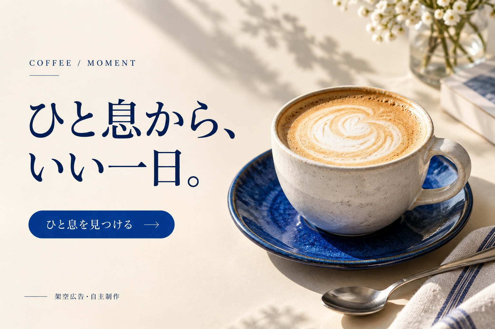
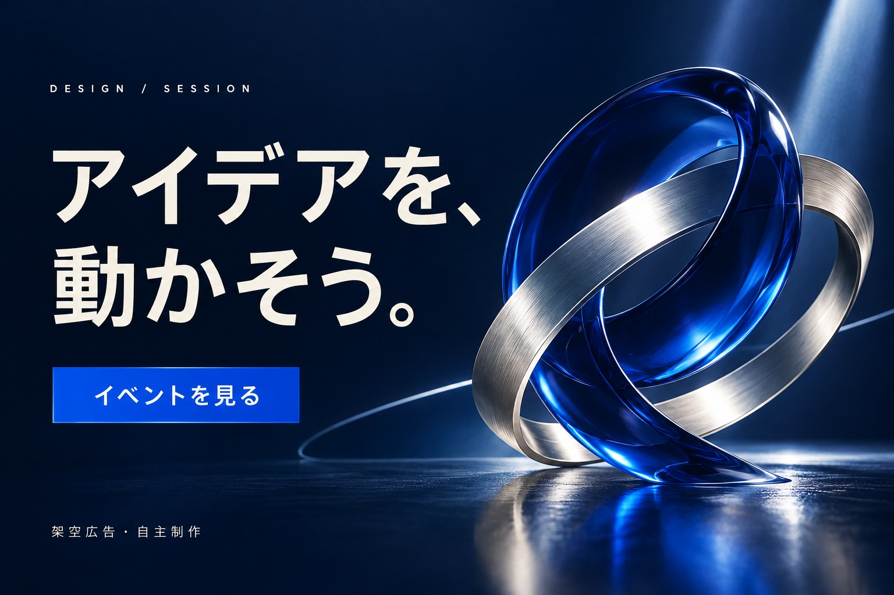

目的・想定読者
仕事を探す人に、新しい環境への前向きな一歩を伝える想定。
 FORM / FIELD
FORM / FIELD03 / CAMPAIGN STUDIES
求人・カフェ・イベント。共通の配色を持つ3つの広告表現。
コピー・構図・配色を指定し、画像生成AIで文字を含むビジュアルを制作。文字の読みやすさと全体の統一感を確認した自主制作の架空広告です。
01 / RECRUIT

仕事を探す人に、新しい環境への前向きな一歩を伝える想定。
大きな見出しからCTAへ視線をつなぎ、階段で成長のイメージを表現しました。
02 / CAFE

短い休憩やカフェ利用を検討する人へ、穏やかな時間を伝える想定。
温かい光と明朝体で落ち着きをつくり、共通の青を器とCTAに使いました。
03 / EVENT

デザインや制作に関心のある人へ、架空のセッション参加を促す想定。
深いネイビーに白い見出しを置き、青と銀のリングで発想が交わる様子を表現しました。